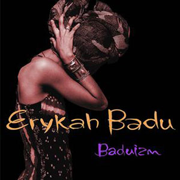
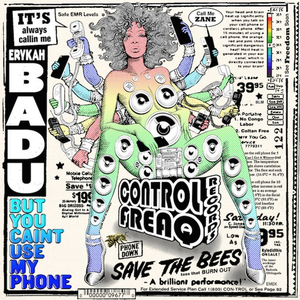

Erykah Badu
By Lokela Blanc

This image is a screen capture taken from the youtube video Erykah Badu: NPR Music Tiny Desk Concert
Erykah Badu is a neo-soul singer/songwriter whose eclectic, alternative nature transveres her music, fashion sense and hollistic lifestyle. One of Badu's greatest gifts is her ability to use her voice as an instrument to create brass and woodwind like melodies creating a unique sound that has influenced artists for generations. Her music covers topics from unrequited love to female empowerment to social justice.


4 Leaf Clover
Didn't Cha Know
Window Seat
Phone Down